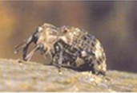

知识库搜索功能
害虫种类
搜索
共计
6
个相关信息
-
 杨干隐喙象杨干隐喙象（Cryptorrhynchus lapathi）是节肢动物门、昆虫纲、鞘翅目、象甲总科、象甲科的1个种。又名杨干象亚洲、欧洲、北美洲中国东北地区杨树的毁灭性害虫。幼虫在木质部和韧皮部之间环绕树干蛀食为害，导致枯死或遇风折断。被害率有时可达100%。东北地区是我国重要的木材生产基地，一旦传入我国并定殖，将对我国的林业、生态、环境和旅游资源造成巨大损失，甚至是毁灭性的危害。
-
杨干隐喙象杨干隐喙象（Cryptorrhynchus lapathi）是节肢动物门、昆虫纲、鞘翅目、象甲总科、象甲科的1个种。又名杨干象亚洲、欧洲、北美洲中国东北地区杨树的毁灭性害虫。幼虫在木质部和韧皮部之间环绕树干蛀食为害，导致枯死或遇风折断。被害率有时可达100%。东北地区是我国重要的木材生产基地，一旦传入我国并定殖，将对我国的林业、生态、环境和旅游资源造成巨大损失，甚至是毁灭性的危害。
-
杨干隐喙象杨干隐喙象（Cryptorrhynchus lapathi）是节肢动物门、昆虫纲、鞘翅目、象甲总科、象甲科的1个种。又名杨干象亚洲、欧洲、北美洲中国东北地区杨树的毁灭性害虫。幼虫在木质部和韧皮部之间环绕树干蛀食为害，导致枯死或遇风折断。被害率有时可达100%。东北地区是我国重要的木材生产基地，一旦传入我国并定殖，将对我国的林业、生态、环境和旅游资源造成巨大损失，甚至是毁灭性的危害。
上一页
- 1
- 2